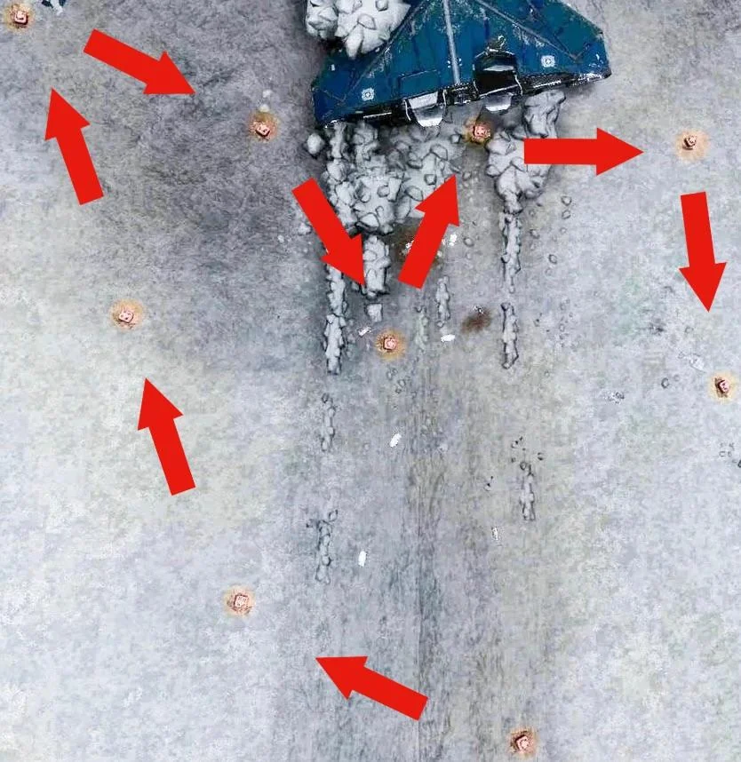

The crashed Cobra of CMDR John Jameson sits ringed by data points that hand you the game's fastest-filling encoded materials
Scan the cluster with your SRV turret, relog on "storage full," repeat — then trade that one abundant data type for the entire encoded grid. A 2025 overhaul expanded the site from 4 scan points to nine and boosted the yield, so you can fill the headline drops in a single session.
HIP 12099
System
1 B
Orbital body
9
Data points (2025 overhaul)
G5
Trade fuel — Adaptive Encryptors Capture
01
What the Site Is
On planet 1 B in HIP 12099 lies the wreck of the Cobra Mk III flown by the ill-fated CMDR John Jameson (ship ID JJ-386). Surrounding it is a cluster of data points you scan with your SRV turret for encoded materials — the third material type, used heavily in FSD, sensor, shield and core-internal engineering.
A 2025 overhaul expanded the site from 4 scan points to nine and boosted the yield, so you can now fill the headline drops in a single session. The strategy mirrors the HGE play: farm the one data type that fills fastest — Adaptive Encryptors Capture (G5) — and cross-trade it for everything else. It's reportedly about twice as fast to trade these for, say, Datamined Wake Exceptions than to gather those directly.
Completes the set
This is the encoded counterpart to your HGE (manufactured G5) and Crystalline Shard (raw G4) runs. Together the three cover all three material types.
02
Outfitting
Same low bar as the other surface runs — an exploration-capable ship (e.g. an Asp Explorer) already has it all:
Planetary Vehicle Hangar + SRV — the SRV's turret does all the scanning.
Detailed Surface Scanner — locates the site on your first visit only.
Supercruise Assist (optional) — auto-orbits the planet so you can line up the drop.
Frame Shift Wake Scanner (optional) — not for the site, but lets you stockpile the whole Wake Scans category passively (see Section 5).
No cargo / limpets — encoded data is weightless and goes to your data inventory.
No weapons, shields, or combat fit required — the wreck is abandoned and non-hostile. Land, drop the SRV, scan.
After your first visit, "Jameson Crash Site" appears in your left Nav panel, so you never coordinate-hunt again.
04
The Scan Loop
Jump & honk
Arrive in HIP 12099, discovery-scan, and head to planet 1 B.
Find it (first visit only)
Drop a DSS probe on 1 B, then fly to -54.37, -50.35. Later visits: just select "Jameson Crash Site" in the Nav panel.
Land & deploy SRV
Park right behind the crashed Cobra — from there your turret reaches the main cluster of data points without repositioning.
Scan everything
Sweep the turret across the data points. After the overhaul there are 9 — you may need to nudge forward for the farthest few.
Reset on "storage full"
When you hit "unable to receive data — storage full," exit to the main menu, switch game mode (Open / Private / Solo), and scan again.
The 9th point is the ship itself
Scanning it plays Jameson's final logs. Worth doing once for the story.
Fill the trade fuel
Max out Atypical Encryption Archives (G4) and Adaptive Encryptors Capture (G5), then head to Ray Gateway.

An efficient sweep. Park behind the wreck (top) and follow a loop like this to reach every data point with minimal repositioning. Map via the r/EliteDangerous thread.
05
What You Get & The Trade Run
The four direct drops
Scanning hands you four encoded types. The two Encryption Files are your trade currency — fill them to the cap:
Material
Grade
Category
Adaptive Encryptors Capture
G5
Encryption · fuel
Atypical Encryption Archives
G4
Encryption · fuel
Cracked Industrial Firmware
G3
Firmware
Modified Consumer Firmware
G2
Firmware
Trade at Ray Gateway (Diaguandri)
Carry your Encryption Files ~2 jumps to the Encoded Material Trader and convert them into whatever you're short on. Two mechanics drive the math:
Down is cheap, sideways is steep
Trading down a grade within a category yields more units; trading sideways (same grade, different category) costs at a worse ratio. Since you don't need more Encryption, you'll mostly do sideways-then-down hops out of your Encryption fuel into the categories you actually want.
The six encoded categories you can fill
Encryption Files
Adaptive Encryptors Capture — G5 · your fuel
Encoded Firmware
Modified Embedded Firmware — G5
Wake Scans
Datamined Wake Exceptions — G5 · FSD
Shield Data
Peculiar Shield Frequency Data — G5
Emission Data
Abnormal Compact Emissions — G5
Data Archives
Classified Scan Fragment — G5
Skip the trade for Wake Scans entirely
Fit a Frame Shift Wake Scanner and scan ship wakes at any busy station or RES as you fly around — the whole Wake Scans category stockpiles passively, so you never have to spend Encryption fuel on it.
Pace it
Three or four 30-minute sessions comfortably max everything out. It's repetitive — stop the moment it stops being fun rather than grinding it in one sitting.
06
Sources
Figures on this page are verified against the sources below.
Note: a 2025 overhaul expanded the site to nine data points and boosted yields; the Live coordinate (-54.37, -50.35) supersedes the older pre-4.0 figure.
r/EliteDangerousOverhead scan-path map of the crash site reproduced in Section 4 — most efficient SRV route across the data points.reddit.com/r/EliteDangerous